WW1: My great, great grandfather’s story with the Loyal North Lancashire Regiment
Sgt Thomas Henry Brady served in the Boer War and World War One, and was injured in the Battles of the Somme.
Sgt Thomas Henry Brady served in the Boer War and World War One, and was injured in the Battles of the Somme.

All details within this blog are sourced from Thomas’ official army records. Other information has been added to give further background, all from official and cited sources. I wrote this blog in August 2017, before which I knew very little about Thomas’ time in the war.
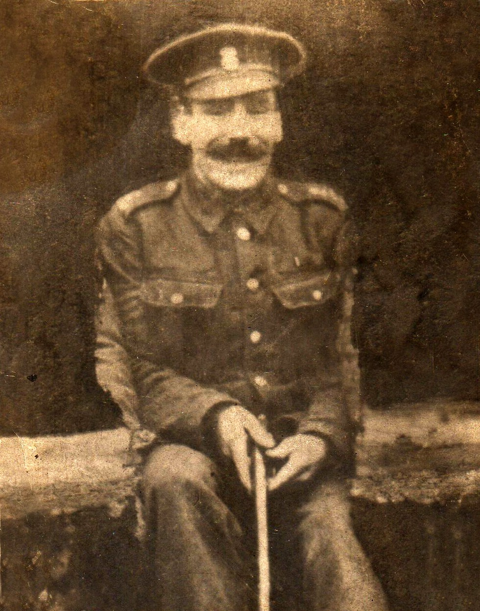 Thomas Henry Brady is my great, great grandfather on my mum’s side. He was born in April 1880.
On the 18th June 1898, at the age of 18 and two months, Thomas was enlisted into the Militia as a Private for six years; service no. 5473 with the Loyal North Lancashire Regiment.
Thomas was 5 feet 2 ¾ inches, 106 lbs with grey eyes, brown hair and a fresh complexion. He was Roman Catholic. His army records note several scars on the back of his head, and a scar on his nose.
At this time he lived at 86 Charter St (off Millers Lane) Manchester (in the Cheetham Hill area of Manchester), lodging with Mrs Wilson. His previous address was 11 George Leigh St, Oldham Rd, Manchester (in the notorious Ancoats district). He had been employed by Thomas Byrne (Priest) at 20 George Leigh St as a labourer.
Between 1899–1901, Thomas was involved in the Anglo-Boer War. He was a Private in the 3rd Battalion (Militia), Loyal North Lancashire Regiment.
The outbreak of the Boer War put the Militia under particular strain as they were stripped of much of their trained manpower, and were then asked to volunteer for overseas service as formed battalions. The 3rd Loyal North Lancashire Regiments mobilised at Fulwood Barracks, Preston, from where they left for pre-deployment training at Shorncliffe and Lydd before sailing to Malta [i]. Thomas completed 76 days training plus OD training 99 from June 1898, and possibly embarked to Malta on the 13th December 1899. The 3rd Battalion, consisting of 917 men, arrived in Malta in January 1900 and were based at Fort Manoel [ii]. By January 1901, the battalion had the strength of 1,027 men.
At the end of the Boer War Thomas was awarded the Mediterranean Medal [iii]. The Mediterranean Medal was authorised by King Edward VII and awarded to volunteer and Militia troops who had replaced the regular troops in garrisons across the Mediterranean and who guarded Boer prisoners [iv]. The 3rd Loyal North Lancashires did garrison duty in Malta until May 1901, when they then sailed for South Africa. However, Thomas returned to England in 1901.
Thomas was paid half the South African war gratuity vide (vide = see another record for details, I think, i.e. see A.O. 143 of June 1901), and in 1901 moved to the 8th Battalion at their training camp in Fleetwood.
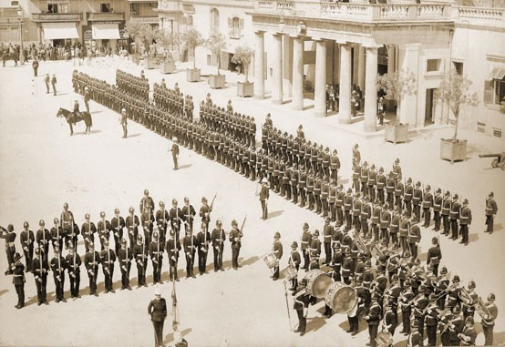
Shortly after Thomas’ return to England, on the 27th May 1901, Whit Monday, Thomas (now aged 20, a builder’s labourer and living at 14 Newton’s Court, Mason Street) married Emma Gantley (aged 19, a waste sorter living at 4 Pump Street) at St Joseph’s Catholic Church, Manchester. Thomas wore his military uniform, and as they left the church the Italian Whit walkers were passing. However, more people were watching the happy couple than the parade!
In 1908 the Militia in its historic form ceased to exist, and its units were transferred to the Special Reserve (but they retained their battalion designations in the regimental system). Up until the outbreak of war in 1914 they continued with unit training and annual camps. The Special Reserve battalions were given two main mobilisation roles — coastal defence and the provision of reinforcements to the Regular Army in the field. Their recruits completed six months continuous training at the Regimental Depot and thereafter attended annual camp for one month each year [vi].
In the 1911 census, Thomas is listed as a school caretaker at St Michael’s church. He lived at 61 Loom St / Bengal St, Ancoats, Manchester with his wife and three young children: Sarah Alice born 1904 (my mum’s grandmother), Emma (Emily, who as an adult moved to Montreal / Quebec, Canada) born 1906 and Thomas born 1909. In 1914, Thomas and Emma’s fourth child, Rose, was born.
On the 8th September 1914 Thomas (now aged 34 years 5 months) was enlisted into the 10th Battalion Loyal North Lancashire (LNL) Regiment, service no. 15883. On the 13th October 1914, Thomas was promoted to the rank of Corporal, and on the 1st March 1915 he was promoted to Sergeant.
The first official intimation of the existence of the 10th (Service) Battalion The Loyal North Lancashire Regiment seems to be contained in Army Order №388 of 1914, wherein it appears as forming one of the battalions detailed as divisional troops for the 22nd Division of the Third New Army. The battalion’s experience of service with the 22nd Division lasted six months, for early in April 1915 it was transferred to the 112th Brigade of the 37th Division, which assembled at Ludgershall, Wiltshire, with the brigade going under canvas on Windmill Hill.
The 37th Division was commanded by Major-General Count Gleichen, and the 112th Brigade by Brigadier-General J. Marriott. The Brigade contained the 11th (Service) Bn. The Royal Warwickshire, the 6th (Service) Bn. The Bedfordshire, the 8th (Service) Bn. The East Lancashire and the 10th (Service) Bn. The Loyal North Lancashire Regiment.
While the division was engaged in training on Salisbury Plain it was inspected by His Majesty King George, and also by Field-Marshal Lord Kitchener.
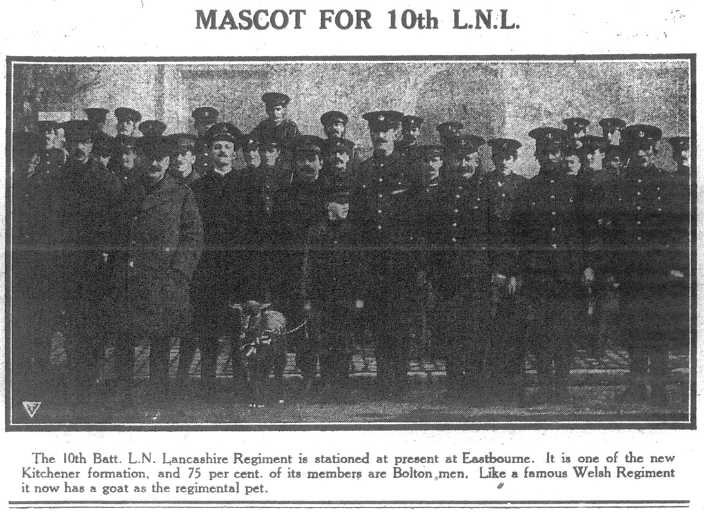
In view of the heavy losses which the original Expeditionary Force had suffered since the commencement of the Great War, there was every desire on the part of the military authorities to push the New Army divisions out to France as soon as their training was complete. About half-way through 1915, the 37th Division received orders to prepare for embarkation for France. By the 1st August, 33 officers and 949 non-commissioned officers had arrived in Boulogne [vii].
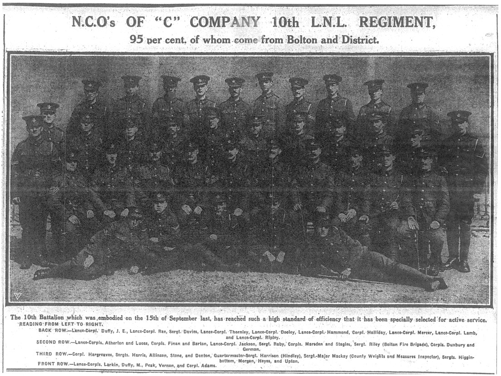
However, Thomas wasn’t one of them as on the 15th July 1915 he had been posted to the 3rd Battalion LNL. The 3rd Battalion, based at its war station in Felixstowe, was responsible for beach defence and the training of drafts of soldiers received from the Regimental Depot at Fulwood Barracks.
A year later, on the 8th March 1916, Thomas embarked for France from Folkestone, and after moving through the Infantry Base Depot, a month later he was ‘in the field’ on 5th April 1916, officially re-joining the 10th Battalion on 8th April 1916. The 10th Battalion’s War Diary shows that a draft of 137 men joined them on the same date. By April 1916, the total number of men sent to join regular and service battalions from the 3rd Battalion in the UK was 5,309 [viii].
One month after entering the field, on the 18th May 1916, Thomas was severely reprimanded for neglect of duty as platoon sergeant. However, there is no reference to this in the Battalion War Diary.
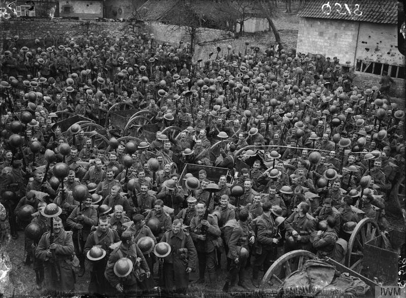
Until July 1916, the 37th Division (including the 10th Battalion) had not taken part in any of the large-scale operations, and though its units had been doing very useful work, their casualties were low compared to other divisions engaged in areas. However, on the 6th July 1916 the battalion moved by buses to Albert via Millencourt, and on the 11th July took over trenches on Usna-Tara Hill. On the same day two brigades from the 37th Division were ordered to advance 500 yards. Despite the patrols pushing forward vigorously, they did not make much progress [x].
On the 16th July the battalion was ordered forward again in support of the 111th Brigade, and moved to the Chalk Pit carrying spare ammunition and bombs to form an ammunition dump. The 111th Brigade attack on Pozières was made at 9am on the same day but failed, the brigade sustaining very heavy losses. The attack was renewed in the afternoon, with the 10th Battalion forming the fourth wave of the assaulting line. “Again, however,” the Battalion War Diary relates, “our objective was not realised as the whole village of Pozières bristled with machine-guns”. The Divisional History takes up the story, saying that “before being relieved [on the 18th July] the 10th Loyal North Lancashire had established itself firmly in the most westerly of the two orchards at the south-east end of Pozières, so that the sad losses of the 15th had not been quite in vain, for our line had been advanced about 1,000 yards and a foothold obtained in the defences of Pozières”. The division was relieved on the 19th and 20th by the 1st Australian Division, which captured Pozières on the 25th July after severe fighting [xi].
The 112th Brigade now went to billets at La Houssaye, with the 10th Battalion moving into Albert where it remained until the 31st July when the 112th Brigade marched by way of Bresle to Bécourt Wood.
On the 6th August the brigade again took over the front line, with the 10th Battalion occupying trenches east of Bazentin-le-Petit.
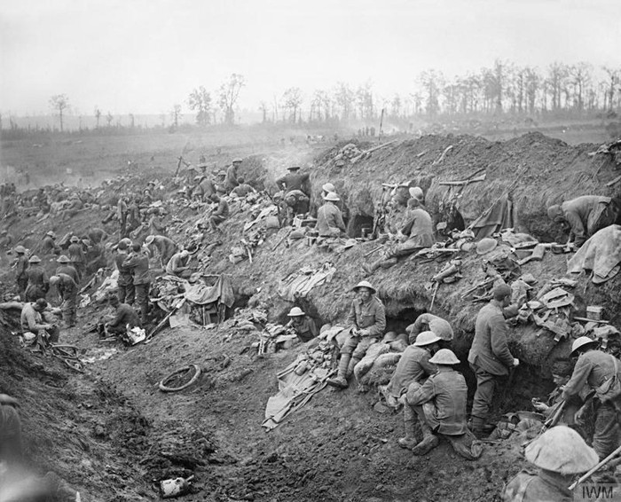
At 2am on the morning of the 11th August 1916 (a stormy day [xiii]), “the turn of the 10th Loyal North Lancashire came” [xiv]. According to the Battalion’s War Diaries, immediately on the tail of a heavy bombardment:
‘C’ Company, under Lieut. J. A. Gravett sprang out of our trench on the right of the barrier, and dashed along the top of the Boche trench, hurling down bombs on its occupants. ‘A’ Company, under Lieut. W. H. Proctor, followed, and, passing ‘C’ pushed on, sprang down into the trench and bayoneted the defenders, clearing the trench up to the Martinpuich Road. Lieut. Duggan, with a building party, then put up a barricade fifty yards from the road, which was completed by 2:50am. Both the company commanders and their seconds-in-command, 2nd Lieuts. E. Y. Wadeson and A. F. Gordon, were wounded (the latter died later). Duggan then took command and beat off three determined counter-attacks with heavy loss to his assailants. At 7am ‘B’ Company took over the three hundred yards of trench won by ‘C’ and ‘A,’ and later a company of the 9th North Staffordshire came up and consolidated the gain. The casualties were: killed, one officer and 20 other ranks; wounded, three officers and 77 other ranks; of the wounded men, three died later.
Thomas is recorded as being wounded in action on 11th August 1916, with a wound to the lower thigh on his left leg. It’s possible that Thomas was injured in this major battle. A full extract from the 10th Battalion War Diary [xv] can be read in the appendix. The battle has multiple entries in the War Diary showing its significance.
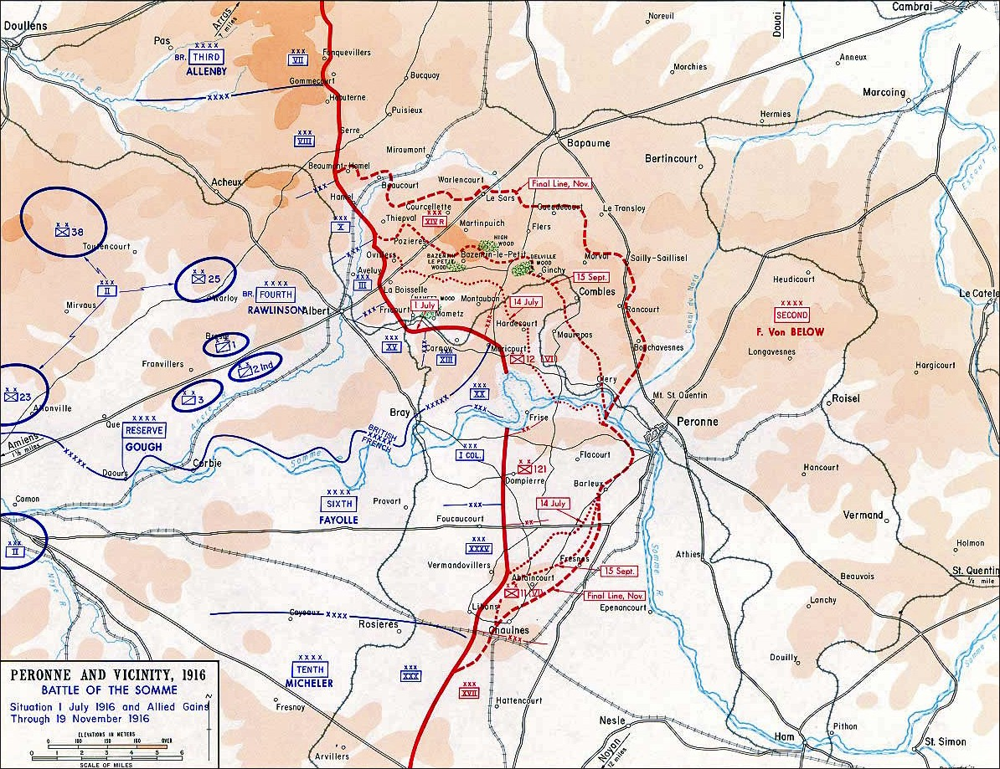
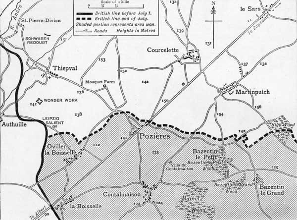
After being injured, Thomas moved through №35 Casualty Clearing Station (CCS) at Doullens before being recorded in Rouen, France on the 14th August 1916 for hospital treatment. In the First World War, the city of Rouen became a major logistics centre with numerous base hospitals. Commonwealth camps and hospitals were stationed on the southern outskirts of Rouen. They included eight general, five stationary, one British Red Cross and one labour hospital.
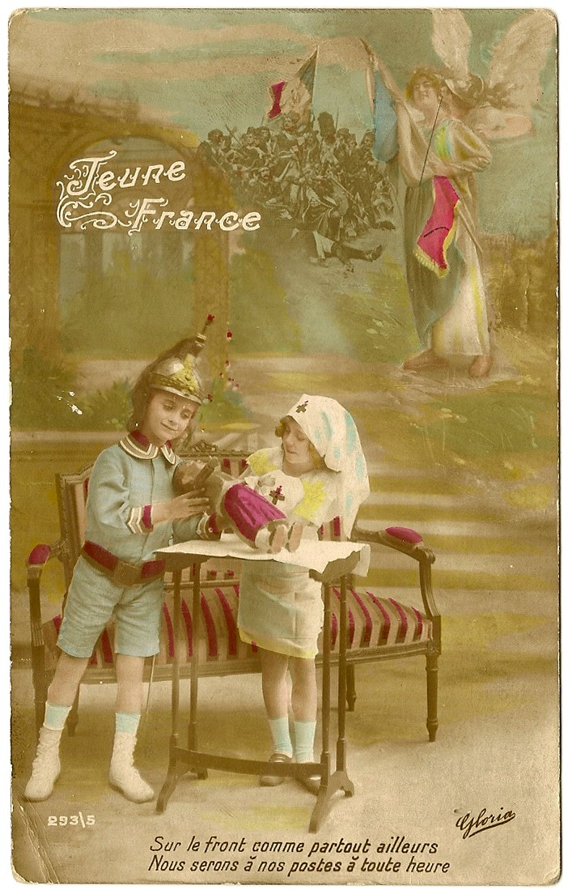
On the 22nd August 1916, Thomas was transferred back to England aboard the hospital ship HMHS St Andrew. The cross channel steamer, with its four officers, four nurses and twenty-six staff could carry 180 casualties in total, and sailed from Rouen (up the River Seine to the Channel) to Southampton [xviii] [xix].
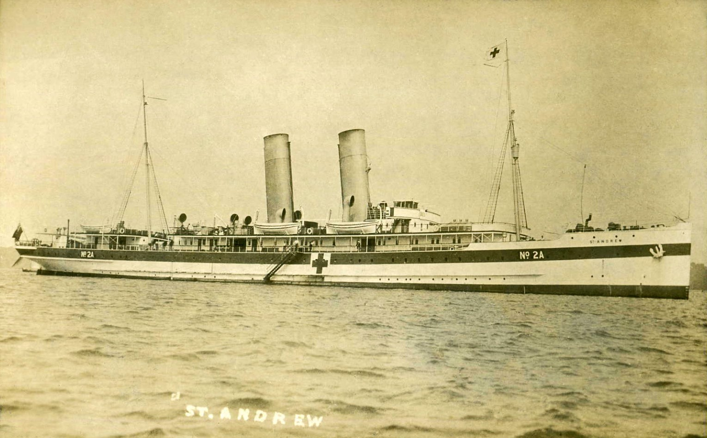
A few months later, on the 28th October 1916, Thomas is recorded as being in the 3rd Western General Hospital in Cardiff. The hospital had beds for 38 officers and 2,626 other ranks. On the same date he was transferred to the 3rd (Reserve) Garrison Battalion, Royal Welsh Fusiliers (whose base in 1916 was in Litherland, Liverpool); service no. 52846.
The following year, on the 27th August 1917, Thomas was transferred back to the 3rd Battalion (Reserves) LNL as Sergeant.
On the 4th September 1917, Thomas was posted to the Western Command Depot. However, three days later Thomas went absent without leave for 11 days. On the 13th October 1917, Thomas faced trial. His army records report:
In close arrest awaiting trial by DCM [District Court Martial] for absenting himself without leave from 9th September 1917–20th September 1917. Found guilty and sentenced to be severely reprimanded. Court reassembled by order of the GOC [General Officer Commanding] M Defence and sentenced the accused to take rank of precedence [i.e. previous rank of Private] as of his appointment to the rank of Sergeant from date 18th August 1915 confirmed by GOC Ministry of Defence, Promulgated [put in effect] 7th October 1917.
On the 20th October 1917, Thomas was posted back to the 3rd Battalion LNL.
On the 7th March 1918, a year and a half after being evacuated from France, Thomas again embarked, and on the 26th April 1918 he transferred to the Labour Corps in France with a new regimental number 519666. The Labour Corps was a force of workers who freed troops from front line duty by performing support work and manual labour, and was manned by officers and other ranks who had been medically rated below the ‘A1’ condition needed for front line service [xxi]. It is likely Thomas was posted to this company due to his leg injury.
A few months later on the 12th July 1918, Thomas was posted to 170 Chinese Labour Company (CLC). The 170 CLC was originally formed from the 5th Infantry Labour Company Devonshire Regiment.
There were about 195 CLCs in all [xxii]. The CLC Base Depot at Noyelles-sur-Mer was the site of the largest camps and the location of the No 3 General Labour Hospital. However, when Thomas joined the 170 CLC they were based in Wagnonlieu, France. Working with the CLC still had its risks. In March, war diaries show that a Lt Holden was wounded and 11 others gassed whilst in Wagnonlieu.
With a shortage of manpower for labouring work, the allies requested an increase in the force of an additional 21,000 men. This demand was filled by importing men from China, India, South Africa, Egypt and other places within the British Empire. Once the CLC units reached the front lines, their main role was to help handle the mountains of supplies needed to maintain the British forces. CLC workers were divided into companies of 500 men each under the command of a British officer. Four British lieutenants and nine British NCOs were also assigned to each unit supported by Chinese foremen that did the great part of the job of running the companies. CLCs under British supervision were organised into a headquarters and four platoons, each under a subaltern. Each platoon consisted of two sections, each under a Sergeant [xxiii].
The Chinese workers dug trenches. They repaired tanks in Normandy. They assembled shells for artillery. They unloaded supplies and war material in the port of Dunkirk [xxiv]. They worked 10-hour days, seven days a week, and only had three holidays a year for Chinese New Year, Dragon Boat and Moon Festival. The London Times wrote:
The coming of the Chinese Labourer Corps to France relieved our own men from an enormous amount of heavy and miscellaneous work behind the lines, and so helped to release a much larger proportion than otherwise would have been possible for combatant duties. For not only did the Chinese fulfil the multifarious tasks at the various bases, such as loading and unloading ships and trains, building railways, repairing roads, working in petrol factories and at various supply depots throughout the northern region, but they dug hundreds of miles of support trenches in the forward areas well within shell rang [xxv].
Shortly after joining the Chinese Labour Company, Thomas was granted leave between 22nd July 1918 and 5th August 1918, which was extended until 8th August 1918, 17 days in total.
In August 1918, the 170 CLC moved to Beaurains to work on roads and water supply. This was close to the front line, with the second Battle of Arras ongoing nearby. In October, the battalion worked on roads and general duties, then moved to Gavrelle mid-October, followed by Filnes-lez-Raches, Coutiches, Orchies and Hergnies by November. On the 25th November, half of 170 Coy moved to St Amand to clean the billets for the Town Major. In December, the regrouped company moved onto to Douai via Orchies [xxvi].
When the war ended and the other men went home, the CLC worked on until 1920, clearing live ordnance and exhuming bodies from battlefield burials and moving them to the new war cemeteries [xxvii]. In total, approximately 300,000 CLC workers had been engaged by the end of the war, of which 193,500 were in France and Flanders [xxviii] [xxix].
On the 30th January 1919, Thomas transferred back to England from Boulogne for demobilisation from the dispersal centre at Prees Heath, Whitchurch, Shropshire. On the 2nd March 1919 Thomas was demobilised to Class Z. Soldiers who were being demobilised, particularly those who had agreed to serve ‘for the duration’, were at first posted to Class Z. They returned to civilian life but with an obligation to return if called upon [xxx].
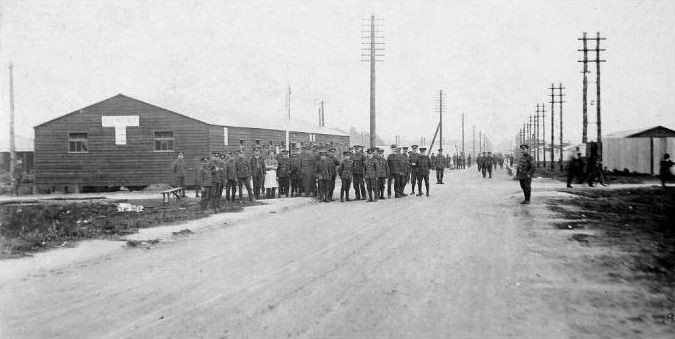
The following year, on the 3rd September 1919 (aged 39 and 127 days) Thomas was again enlisted for one year to the Chinese Labour Corps through the re-enlistment monthly draft, service no. 708532. He was appointed back to his former rank of sergeant, notified by postal telegram. A week later on the 11th September 1919 he was posted to the WCLC (Western Command Labour Centre), which at this time was based at Prees Heath, Shropshire.
In 1919 thousands of men re-enlisted for short periods of service, helped by financial incentives including a War Bonus and separation allowance paid to their families for married men. Men who re-enlisted were only accepted into a Corps that was open for recruitment and only into a branch of the army that they had previously served in. An Army Order of April 1919 extended re-enlistment to men who were then serving in Class Z Army Reserve, men who had been discharged (including Special Reservists) and disembodied men of the Territorial Force [xxxii].
On the 10th October 1919 Thomas proceeded overseas, and on the 13th October was at the CLC Base Depot. After 124 days serving abroad, Thomas moved to the dispersal station on the 10th February 1920.
On the 11th March 1920, Thomas was discharged as Sergeant and again posted to Class Z. However, the Z Reserve list was abolished on the 31st March 1920 [xxxiii], marking the end of Thomas’ war. A note on his army records says “Character Good”. He now lived at 13 Burdon St, Ancoats, Manchester.
His wife and family now lived at 13 Purdon St, Ancoats, Manchester and were still living there at the 1921 census on 19th June. However, Thomas is listed separately as a patient at Baguley, Bucklow, where the Manchester Sanatorium isolation hospital cared for TB patients. He’s listed as a plumber’s assistant for Bailey and Co, Manchester, but ‘out of normal employment’ as were all the patients on that census page.
In addition to his Mediterranean Medal, Thomas was awarded the Victory Medal and the British War Medal [xxxiv].
Thomas would eventually lose his left leg (date unknown).
Thomas died on 16th December 1925 of phthisis (the term, now almost obsolete, was formerly used as a synonym for pulmonary tuberculosis i.e. TB), and is recorded as an army pensioner, after attempting to work on his return to civilian life, despite his injuries/ill health. He had a military funeral.
10 Battalion Loyal North Lancashire Regiment War Diary, 1915 Aug — 1918 Feb.
Loyal North Lancashire Regiment 1914–1919 by Colonel H. C. Wylly.
06:30am, 11th August 1916
I beg to forward herewith a preliminary account of the operation against the Intermediate Line which my Battalion undertook early this morning.
The objective was that part of the Intermediate Line from the Barricade at about S.2.d.9.6 to the road Westwards where it crosses the Intermediate Line.
In order to avoid as far as possible the enemy barrage I determined to attack in enfilade en preference to a frontal attack.
The dispositions were that two Companies were employed. I withdrew from the remaining two companies all their best bombers and mixed them with the fighting groups of the companies detailed for the attack.
Lt Gravett, ‘C’ Coy was detailed to lead the attack, with ‘A’ Coy, Lt Proctor in support.
These two companies occupied the line previous to the attack, ‘C’ in the left, ‘A’ in the right, their place being taken by the company in close support as they formed their dispositions previous to zero time.
A ramp was constructed to enable the men to get out of the trench quickly and by 01:55am (zero being 02:00am) the leading company were all above ground in proper formation.
I ordered the O.C ‘A’ Coy to sweep the objective and either side of it thoroughly with Lewis Gun fire from 01:55 am till 02:20 am and stationed four Rifle Grenade men on the top near the barricade to continue firing rifle grenades over the attacking infantry into the trench and along each side of it.
Lt Gravett led the attack with twenty bombers carrying waistcoats, ten bombs in each, each man with rifle bayonet fixed slung.
Behind him four fighting groups under their own NCOs with whom they have (their) instructions — nine men in each group, bombers wearing waistcoats, ten bombs each — every man in addition carried two bombs each. Behind these, trench clearers and men carrying buckets of bombs (all these in the trench).
The Lewis Guns were on the right flank, one fired ahead, the second swept the ground to the North, i.e. the right flank.
A right flank guard 50 yards from the trench was to sweep up snipers.
As soon as the last men of ‘C’ Company passed the Barricade,the orders were for the leading group of ‘A’ Company to get into the trench and follow on — the two last groups to carry one pick and one shovel each — two groups carrying buckets of bombs.
In addition, one selected NCO and twelve expert bombers and determined men were selected to advance along the left or S. side of the trench, in order to support ‘C’ Company if held up and take the enemy in rear.
The artillery barrage is reported to have been weak and ineffective, in fact the Officers inform me that they could not have told when the barrage lifted at zero had they not been accurately clocked. It did not keep the enemy snipers’ heads down nor apparently interfere with their machine-gun fire.
At zero precisely, Lt Gravett and his twenty bombers rushed along the trench as they passed the Barricade, throwing bombs into the trench and pressing on at the double. The remaining groups followed on, some in the trench, some outside as detailed. There was little opposition for 100 yards, when the enemy began to throw bombs from the trench and put up the S.O.S signal and many flares. The men took cover in shell holes and crept forward throwing bombs, the groups doing their work in the trench. At about 150 yards the enemy opened machine gun fire with two machine guns from the road and enfiladed the trench and both sides and under a shower of bombs our men fell back there being many casualties. Lt Gravett was here wounded by shrapnel and incapacitated from throwing bombs.
Lt Proctor and party now came up on the left side of the trench and attacked the Bosche vigorously, driving them back and carrying on the whole attack again.
The men shouted out “Bolton”, “Bolton” being apparently mostly men from that town and they charged forward in the trench some men still under Lt Gravett still on top and bombing and finally drove the enemy back over the road. The last forty yards being quite straight and a machine-gun firing from behind the road directly into the trench, after several men had been knocked out it was decided to block the trench at this point, which was done and a second barricade erected forty yards further back. The first barricade being held and Lewis Guns in position.
The enemy fired great numbers of rifle grenades as the attackers advanced into the trench and on either side. Lt Gravett was a second time wounded in the head by a bomb but remained most gallantly in command of his men till the trench was finally taken and consolidated. Lt Proctor was also wounded in two places by bullet and bomb. These were the only two officers concerned in the actual attack and are the only officers in the Companies which took part in the operation.
The enemy bombarded the captured trench heavily at once and continuously and the officer who was placed on guard at the new barricade has just been severely wounded.
At 4:45am the enemy made a determined counterattack, crossing the road and attacking our barricade in the trench whilst large numbers attacked across the open from another trench near the road. These attacks were all beaten off and the enemy driven back over the road. The Lewis Guns killed a considerable number in the open.
In the trench itself twenty Germans were killed. The remainder scattered across the open and across the road, the Lewis Guns doing good execution.
The men have suffered heavily and although I have not yet received the total list of casualties I fear that the two companies have lost 50% in killed and wounded. Both the Company Sergeant-Majors were killed. I am informed by the medical officer and by my second in command that the men are however in good spirits and have got unlimited pluck in them notwithstanding.
I cannot speak too highly of the gallantry and determination of Lt Proctor,and Lt Gravett who personally led their men with very great courage and I wish to recommend these Officers for the Military Cross. Lt Proctors jaw is smashed, Lt Gravett I trust is not so severely wounded.
R. Cobbold, Lt Colonel, Comd 10th Loyal N. Lancs.
27 Feb 17: Arrived France 3 Officers & 493 ORs
10 Jun 17: 170 Coy is undertaking too many small detachments. — GHQ Diary
15 Jun 17: Tos 40 Gp from 36 Gp — 40 Gp Diary, Capt E WH Powell — OC
1 Jul 17: Located DUISANS (3rd Army) — 40 Gp
11 Jul 17: Det (2 + 40) erecting ammo sheds at FOSSEUX — 40 Gp Diary
17 Jul 17: HQ & 3 pls moves to ST LAURENT, BLANGY — road construction — 40 Gp Diary
30 Jul 17: 1 pl moves from DUISANS to join HQ at ST LAURENT — 40 Gp Diary
12 Oct 17: 53 ORs sos to 180 Coy — 40 Gp Diary
1 Feb 18: 170 Coy — 1 OR accidentally wounded — XVII Corps Diary
3 Feb 18: 170 Coy — 30 ORs gassed — XVII Corps Diary
23 Mar 18: 170 Coy — move from BLANGY to WAGNONLIEU — XVII Corps Diary
24 Mar 18: 170 Coy — Lt Holden wounded and 11 ORs gassed — XVII Corps Diary
15 Jul 18: 55 Gp — 108, 170 & 169 Coys and 276 & 756 Area Coys and 1 Canadian Bn — tos — Canadian Corps Diary
30 Jul 18: All units sos to XVII Corps: — Canadian Corps Diary
55 Gp — 108, 170 & 169 Coys and 276 & 756 Area Coys and 1 & 2 Canadian Bns
24 Aug 18: 55 Gp — 47, 108, 137, 237?, 170 & 181 Coys and 42, 83 & 118 Coys CLC and 755 Area Coy — tos from XVII Corps — Canadian Corps Diary
25 Aug 18: 47, 108, 112, 137, 169, 170, 180 & 181 Coys and 278, 755, 756 & 947 Area Coys and 42 & 83 Coys CLC — handed over in situ to Canadian Corps — XVII Corps Diary
28 Aug 18: 170 Coy — move from WAGONLIEU to BEAURAINS — Canadian Corps Diary
28 Aug 18: 170 Coy — move from WAGNONLIEU to BEAUVRAINS — 1st Army Diary
1 Sep 18: SITREP — Canadian Corps Diary
Roads — 47, 108, 159 & ½ 170 Coy
Water Supply — 45 Coy and ½ 170 Coy
1 Oct 18: SITREP — Canadian Corps Diary
Roads — 47, 108, ½ 152, 159, 1 pl 170 & ½ 181 Coys and 1, 3 & 1 pl 4 Canadian Coys
General Duties — 3 pls 170 Coy and 1 pl 2 Canadian Coy
10 Oct 18: Following sos to XXII Corps — Canadian Corps Diary
Roads — ½ 47, 108, 159, ½ 170, ½ 181 & 183 Coys
General Duties — ½ 47 & ½ 170 Coy
14 Oct 18: 170 Coy (CLC?) — move from BEAURAINS to GAVRELLE — 1st Army Diary
14 Oct 18: 170 Coy — tos 51B/H.4.cent (Nr GAVRELLE) 22 Gp from XXI Corps — roads — VIII Corps Diary
18 Oct 18: Moved from BLANGY PARK to billets in ARRAS — 40 Gp Diary
24 Oct 18: Sos to 39 Gp — 40 Gp Diary
24 Oct 18: Regrouping: — 1st Army Diary
VIII Corps — 22 & 23 Gps
37, 39, 50, 51, 54, 80, 89, 169, 170, 192, 193, 718, 733 & 735 Coys
6 & 8 Canadian Area Coys
30 Oct 18: 22 Gp — 50, 54, 80, 129, 170, 195 & 718 Coys and 6 & 8 Canadian Employment Coys — VIII Corps Diary
30 Oct 18: Reorganisation as follows: — 1st Army Diary
VII Corps — 22 Gp — 50, 54, 80, 129, 170, 195 & 718 Coys and 6 & 8 Canadian Area Coys
7 Nov 18: 170 Coy — move from FLINES to COUTICHES — VIII Corps Diary
9 Nov 18: 170 Coy — move from FLINES to COUTICHES — 1st Army Diary
10 Nov 18: 170 Coy — move from COUTICHES to ORCHIES — VIII Corps Diary
10 Nov 18: 170 Coy — move to ORCHIES — 1st Army Diary
11 Nov 18: 170 Coy — move from ORCHIES to HERGNIES — 1st Army Diary
11 Nov 18: 170 Coy — move from ORCHIES to HERGNIES (44/K.27) — VIII Corps Diary
22 Nov 18: 170 Coy — move from HERGNIES to ORCHIES — 1st Army Diary
22 Nov 18: 170 Coy — move from HERGNIES to ORCHIES — VIII Corps Diary
25 Nov 18: ½ 170 Coy — move from ORCHIES to ST AMAND — cleaning billets for Town Major — VIII Corps Diary
8 Dec 18: ½ 170 Coy — at ST AMAND rejoin Coy HQ at ORCHIES — VIII Corps Diary
16 Dec 18: Dets 170 Coy — move from ORCHIES to DOUAI, 100 ORs roads with 311 RCC RE and 30 with 282 Army Troops Coy — VIII Corps Diary
15 Mar 19: 39, 45, 54, 80, 89, 170, 178, 182 & 195 Coys — to cadre (1st Army) — GHQ Diary
[i] lancashireinfantrymuseum.org.uk/the-royal-lancashire-militia, accessed 2017
[ii] maltaramc.com/regmltgar/2loyntlan.html, accessed 2017
[iii] Medal roll WO100 368
[iv] angloboerwar.com/medals-and-awards/british/1722-mediterranean-medal, accessed 2017
[v] lancashireinfantrymuseum.org.uk/the-royal-lancashire-militia, accessed 2017
[vi] lancashireinfantrymuseum.org.uk/the-royal-lancashire-militia, accessed 2017
[vii] Loyal North Lancashire Regiment 1914–1919 by Colonel H. C. Wylly
[viii] Loyal North Lancashire Regiment 1914–1919 by Colonel H. C. Wylly
[ix] Imperial War Museum image Q518
[x] Loyal North Lancashire Regiment 1914–1919 by Colonel H. C. Wylly
[xi] Loyal North Lancashire Regiment 1914–1919 by Colonel H. C. Wylly
[xii] eastsussexww1.org.uk/battle-petit-wood, accessed 2017
[xiii] en.wikipedia.org/wiki/Battle_of_Delville_Wood, accessed 2017
[xiv] Loyal North Lancashire Regiment 1914–1919 by Colonel H. C. Wylly
[xv] WO 95/2538/1
[xvi] emersonkent.com/map_archive/first_battle_of_the_somme.htm, accessed 2017
[xvii] 1914-1918.net/maps.htm, accessed 2017
[xviii] Chatham in the Great War by Stephen Wynn, accessed 2017
[xix] wartimememoriesproject.com/greatwar/ships/view.php?pid=1309, accessed 2017
[xx] forums.clydemaritime.co.uk, accessed 2017
[xxi] 1914–1918.net/labour.htm, accessed 2017
[xxii] blog.nationalarchives.gov.uk/blog/chinese-labour-corps-western-front-2, accessed 2017
[xxiii] britishchineseheritagecentre.org.uk/?catid=0&id=55, accessed 2017
[xxiv] multimedia.scmp.com/ww1-china, accessed 2017
[xxv] britishchineseheritagecentre.org.uk/?catid=0&id=55, accessed 2017
[xxvi] 1914–1918.invisionzone.com/forums/topic/216657-csm-albert-warren-msm-labour-corps, accessed 2017
[xxvii] theguardian.com/world/2014/aug/14/first-world-war-forgotten-chinese-labour-corps-memorial, accessed 2017
[xxviii] 1914–1918.net/labour.htm, accessed 2017
[xxix] issuu.com/wargravescommission/docs/chinese_labour_corps, accessed 2017
[xxx] 1914–1918.net/reserve.htm, accessed 2017
[xxxi] thegreatwar.whitchurch-shropshire.co.uk/prees-heath-camp, accessed 2017
[xxxii] longlongtrail.co.uk/soldiers/a-soldiers-life-1914–1918/re-enlisting-into-the-army-in-1919, accessed 2017
[xxxiii] 1914-1918.net/reserve.htm, accessed 2017
[xxxiv] discovery.nationalarchives.gov.uk/details/r/D1452402, accessed 2017
[xxxv] 1914–1918.invisionzone.com/forums/topic/216657-csm-albert-warren-msm-labour-corps, accessed 2017